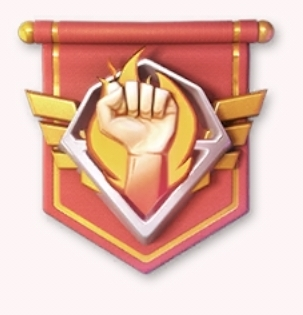

❄️ الموسم الثاني — الأسبوع الأول
العاصفة القطبية (Polar Storm) — دليل NWH الكامل
Season 2 · Week 1
العاصفة القطبية (Polar Storm) — دليل NWH الكامل
Season 2 · Week 1الموسم الثاني يقدّم نظامًا جديدًا بالكامل مبنيًا على الحرارة. قاعدتك لها درجة حرارة خاصة بها، والخريطة من حولك لها حرارة بيئية تنخفض كلما اقتربت من المركز (حتى -80°م عند العاصمة). قاعدتك تتجه تدريجيًا نحو حرارة البيئة المحيطة بها.
إذا بقيت قاعدتك تحت -20°م لأكثر من 5 دقائق، تتجمّد — ويُمنع عندها النقل والتجمّعات (Rallies)، وتبقى فقط التيليبورتات العشوائية ونقل التحالف ممكنة.
لمواجهة هذا، تملك:
هذه الأنظمة مترابطة: الفحم من مواقع الحفر يُستخدم لبناء وترقية الأفران والمصانع، وهذه بدورها تحميك من التجمّد وتفتح مقاومة الفيروس اللازمة لمحاربة وحوش القطب والسيطرة على مزيد من الأراضي.
هذه هي المهام التي يجب إنجازها في أول يوم من الموسم. كل مهمة مرفقة بنوعها (رسمية من اللعبة أو استراتيجية داخلية لـNWH).
كل قاعدة تشغل 3×3 خانات (9 خانات). التوزيع المعتمد في NWH يترك خانتين فارغتين بالضبط بين حدود كل قاعدتين متجاورتين، أفقيًا وعموديًا: 3 خانات مشغولة + خانتان فارغتان + 3 خانات مشغولة.
الأهداف: توسيع مساحة نفوذ NWH، تنظيم التحركات، تقليل الأماكن المتاحة للعدو، وتجهيز منطقة خلفية محمية لفرن التحالف.
نطاق الحرارة يمتد من -270°م إلى +300°م. حرارة قاعدتك تتجه تدريجيًا نحو حرارة البيئة المحيطة.
| مستوى العاصفة الثلجية (Blizzard) | انخفاض الحرارة |
|---|---|
| المستوى 1 | -10°م |
| المستوى 2 | -15°م |
| المستوى 3 | -20°م |
| المستوى 4 | -25°م |
| المستوى 5 | -30°م |
| المستوى 7 | -45°م |
| المستوى 8 | -50°م |
فرن المدينة (للمدن التي تسيطر عليها، يدفّئ كامل بلاطة المدينة): المستوى 1 = +5°م، المستوى 2 = +20°م، المستوى 3 = +30°م، المستوى 4 = +40°م، المستوى 5 = +50°م، المستوى 6 = +60°م.
الفرن النووي (في العاصمة): يُدفّئ الخريطة بأكملها بعد تفعيله، بزيادة تقارب +10°م على مستوى الخريطة.
مصادر الفحم: مواقع الحفر (إنتاج مستمر)، باقة الموسم وباقة الأسبوع، صناديق الإمدادات المتناثرة (Supply Collections — تظهر فقط عندما تصل حرارة الأرض إلى 0°م)، مهام الموسم، مهام الرادار، وأول عملية احتلال لمدينة أو موقع حفر.
الاستخدامات: بناء وترقية المنشآت الموسمية، تشغيل الفرن الشخصي، التبرّع لفرن التحالف.
الإنتاج يبدأ من 720/ساعة في المستوى 1 ويصل إلى 21,600/ساعة في المستوى 30 — كل مستوى يضيف 720/ساعة ثابتة.
يُفتح مصنع جديد فقط عند وصول المصنع السابق إلى المستوى 15. باقة الأسبوع (Weekly Pass) تمنح مصنعًا إضافيًا فورًا.
| المستوى | الإنتاج/ساعة | تكلفة الترقية (فحم، تقريبي) |
|---|---|---|
| 1 | 720 | — |
| 2 | 1,440 | ≈ 1,400 |
| 30 | 21,600 | ≈ 359,300 (قبل التخفيضات) |
يُبنى على أرض من المستوى 1. الإصلاح يحتاج حتى 20 تعزيزًا، ولا يستطيع تنفيذ ذلك سوى أعضاء R4/R5. يُدفّئ فقط القواعد الواقعة ضمن نطاقه — لذلك يجب تجمّع الأعضاء بالقرب منه.
| المستوى | فحم/دقيقة | الحرارة | حرارة Overdrive | فحم/دقيقة (Overdrive) | التخزين |
|---|---|---|---|---|---|
| 1 | 300 | 3°م | 6°م | 1,200 | 200K |
| 10 | 840 | 7.5°م | 15°م | 3,360 | 1,450K |
| 20 | 1,440 | 12.5°م | 25°م | 5,760 | 4,150K |
المتانة (Durability) تتراوح من 205K في المستوى 1 إلى 300K في المستوى 20.
صناديق الإمدادات (Supply Collections): تظهر فقط عندما تصل الأرض إلى 0°م. إذا كانت متجمدة، تحتاج حرارة فرن التحالف أو كسر الجليد (1,000 متانة لكل ضربة، 5 نقاط طاقة).
أول أرض يجب امتلاكها هي موقع حفر من المستوى 1. التوسّع بعدها يتبع مبدأ التجاور (بما في ذلك الاتصال القطري من الزوايا).
| مستوى موقع الحفر | مقاومة الفيروس المطلوبة (تقريبية) |
|---|---|
| المستوى 1 | 4,000 |
| المستوى 2 | 6,500 |
| المستوى 3 | 8,500 |
| المستوى 4 | 9,500 |
| المستوى 6 | 10,500 |
تطابق الوحدات مع الوحوش: الغوريلا (طيران) ضعيفة أمام المركبات الصاروخية، الدب (صاروخي) ضعيف أمام الدبابات، الماموث (دبابات) ضعيف أمام الطيران. التحالفات ذات القوة الدبابية يُنصح لها باستهداف الدببة القطبية أولًا.
| مستوى المدينة | موعد الفتح |
|---|---|
| المستوى 1 | الأسبوع 1، اليوم 3 + 12 ساعة |
| المستوى 2 | الأسبوع 1، اليوم 6 + 12 ساعة |
| المستوى 3 | الأسبوع 2، اليوم 3 + 12 ساعة |
| المستوى 4 | الأسبوع 2، اليوم 6 + 12 ساعة |
| المستوى 5 | الأسبوع 3، اليوم 3 + 12 ساعة |
| المستوى 6 | الأسبوع 3، اليوم 6 + 12 ساعة |
| المستوى 7 | الأسبوع 4، اليوم 7 + 12 ساعة |
الحد الأقصى لامتلاك المدن: 6 مدن. مدن المستوى 6 هي الأكثر قيمة، وتقع شمال وشرق وجنوب وغرب العاصمة.
هذا الدليل مبني على تحليل وتوليف المصادر التالية، وهي أدلة مجتمعية غير رسمية (ليست صادرة عن الناشر الرسمي للعبة). الأرقام قد تتغير مع تحديثات اللعبة — تحقق دائمًا داخل اللعبة قبل اتخاذ قرارات مهمة.